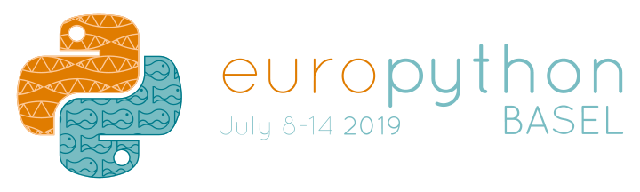
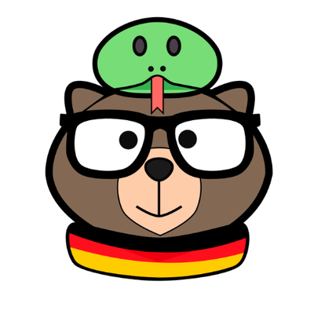
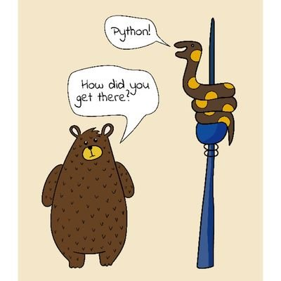
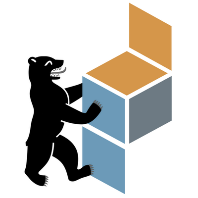

C++ ❤ Python
From __modules__ to ₕybᵣᵢd applications
Dr. Cristián Maureira-Fredes
R&D Manager @ TQtC


@cmaureir
 ? 😕
? 😕
Wrong conference
C++ & Python
Similarities
- General purpose
- Multi paradigm
Differences
- Statically/Dynamically typed
- Compiled/Interpreted
But usually we hear...
"C++ is too difficult, but it's fast!"
"Python is so easy!, but kind of slow..."
Which one then? 😖
Let's take a step back...
Python roots 🌱
ABC
HOW TO RETURN words document:
PUT {} IN collection
FOR line IN document:
FOR word IN split line:
IF word not.in collection:
INSERT word IN collection
RETURN collection
https://homepages.cwi.nl/~steven/abc/

The C Programming Language,
by Brian W. Kernighan and Dennis M. Ritchie (1978)
We have a simple language
with a free pass to
other languages 🎊
Using C as glue
- New functionalities
- Improving performance
- Use existing code
- ...and more crazy ideas.
- Fortran and C (Array)
 C (Parser)
C (Parser)- C and C++ (Torch)
Why C++ then?
C++ and Python can help each other
in many ways.
How do you know?
Qt /kjut/
Cross platform C++ framework, for UI and more.


Welcome to Learning C++
(in 1 minute)
Syntax
// C++
int i = 1;
float pi = 3.14;
std::string s = "hello";
std::vector<int> l = {1,2,3,4};
int add(int a, int b) {
return a + b;
}
int main() {
int c = add(3, 2);
std::cout << c << std::endl;
return 0;
}
# Python
i = 1
pi = 3.14
s = "hello"
l = [1,2,3,4]
def add(a, b):
return a + b
if __name__ == "__main__":
c = add(3, 2)
print(c)
Execution
$ g++ main.cpp # compilation
$ ./a.out
$ python main.py
Congratulations,
you just learned C++ 🎉
(or at least some concepts)
The Evolution 🔬
From C++11, to C++20C++11
// 'auto' type
auto a = 0.74;
auto b = "hello";
// tuples
auto triple = std::make_tuple(1,2,3);
std::tie(x, y, z) = triple;
// dictionaries
auto d = std::unordered_map<int,std::string>({4, "Mary"},
{2, "John"});
auto value = d[4];
// lambdas
std::sort(v.begin(), v.end(),
[](int x, int y) { return std::abs(x) < std::abs(y)});
C++14
// 'auto' return type
auto add(int x, int y) {
return x + y;
}
// variable templates
template <typename T>
constexpr T pi = T(3.14159265359...);
// binary literals
auto b = 0b1101;
// digits separators
auto n = 1'000'000;
C++17
// unpack when calling functions
std::pair<int, int> origin() {
return std::pair<int, int> {0, 0}
}
auto [x, y] = origin();
// unpack map values in loop
auto items = std::unordered_map<int, std::string>({4, "Mary"},
{2, "John"});
for (const auto& [key, value]: items) {
//...
}
C++20
// module declaration
export module simple;
export string hello() {
return "Hello, PyCon2020!";
}
// module usage
import simple;
int main() {
cout << hello();
}
// ranges
vector ints{0,1,2,3,4,5};
auto even = [](int i){ return 0 == i % 2; };
auto square = [](int i) { return i * i; };
for (int i : ints | views::filter(even) | views::transform(square)) {
cout << i << ' ';
}
New operators
Walrus
Joel Garlich-Miller, U.S. Fish and Wildlife Service
:=
Spaceship
Grainy B&W image of supposed UFO, Passaic, New Jersey.
<==>
Time for some code

First scenario
C++ helping Python
- CPython modules:
- code/hello/
- C++ goodies into CPython:
- code/fastglob/
- code/fastmath/
Python bindings from C++ projects
Unleash the power of C++ in Python:
A guide through the bindings generation process
Second scenario
Python helping C++
- Embedding Python
- code/embedding/
- Extending Qt/C++ with Python
- code/scriptableapplication/
What now?
- Don't be afraid of
- New amazing features!
- Keep an eye in other languages 👀
- We don't need to pick only one.
- Let's bring more amazing things to 🐍
C++ ❤ Python
From __modules__ to ₕybᵣᵢd applications
Dr. Cristián Maureira-Fredes
R&D Manager @ TQtC
@cmaureir
Support your local groups!
  